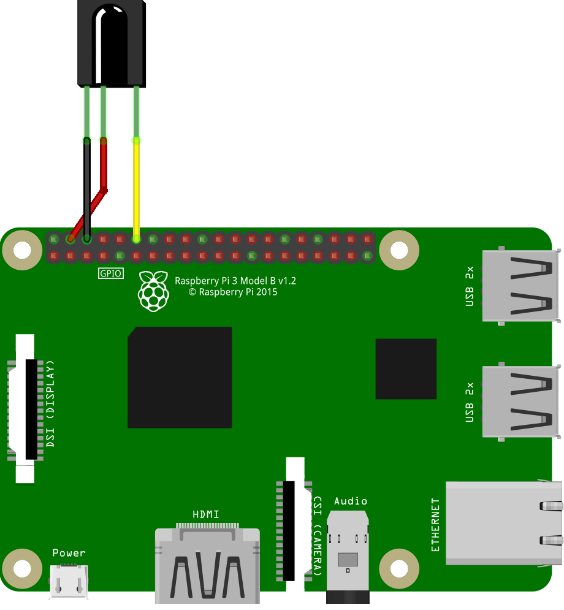
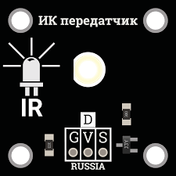

Working with IR sensors on Raspberry Pi 3
This article is not relevant for the latest versions of the clover image and works only on the versions clover_v0.16-clover_v0.17.
Infrared sensors are a convenient tool for transmitting any commands to the copter. They are flexible in configuration, and interaction with them is possible in Python.
Connecting the IR receiver
Most IR receivers operate and are connected the same way. Such receivers have 3 pins for connecting: G/GND — ground V/VCC — 5V power, S/OUT — signal.

The signal port doesn't have to be connected to port GPIO 17; this pin may be changed during the in/out port settings.
Configuring the IR receiver to work with the LIRC module
LIRC (Linux Infrared Remote Control) is a stable and time-proven open source library, which allows sending and receiving commands via an infrared port. LIRC is supported by Raspbian.
To install LIRC and related modules, connect your Raspberry Pi to the Internet and run the console command:
sudo apt-get update
sudo apt-get install lirc
sudo apt-get install python-lirc
pip install py-irsend
To correctly edit the system files, superuser privileges are required; when calling a text editor, use
sudo.
After installing the module, edit file /etc/modules and add line:
lirc_dev
lirc_rpi gpio_in_pin=18 gpio_out_pin=17
Where:
gpio_in_pinis the input pin from the receivergpio_out_pinis the transmitter output pin
Update the following line in file /boot/config.txt:
dtoverlay=lirc-rpi,gpio_in_pin=18,gpio_out_pin=17
Add the following lines to file /etc/lirc/hardware.conf. Is this file does not exist, create it yourself.
LIRCD_ARGS="--uinput --listen"
LOAD_MODULES=true
DRIVER="default"
DEVICE="/dev/lirc0"
MODULES="lirc_rpi"
Update the following lines in file /etc/lirc/lirc_options.conf
driver = default
device = /dev/lirc0
All required settings are made, you now have to restart your Raspberry Pi device to complete the installation. To do so, run:
sudo reboot
After rebooting, check its status by calling command:
sudo /etc/init.d/lircd status
If everything has been done correctly, the status should be active.
To check whether the installed module LIRC is running, disable daemon lircd, and call the appropriate command:
sudo /etc/init.d/lircd stop
mode2 -d /dev/lirc0
Now point the IR transmitter on your device and tap a few keys. You should see something like this:
space 402351
pulse 135
space 7085
pulse 85
space 2903
pulse 560
space 1706
pulse 535
If you are using an IR transmitter (a TV remote, an air conditioner remote, etc. and you are not getting the signal when checking, your remote is evidently using another signal frequency. When using receivers such as TSOP 22XX, the operating frequency of the signal reception will be in the range between 30 and 50 kHz.
Write your configuration of the IR transmitter
If you want to use your own IR transmitter, you will have to write its specific settings using the supplied module irrecord. For this purpose, disable daemon lircd, and call the appropriate command. During transmitter calibration, stick to all written instructions.
Please note that the last step of the calibration will be specifying the names of the keys that you will want to decode programmatically. To view the list of available names, call command
irrecord --list-namespace.
irrecord -d /dev/lirc0 ~/lircd.conf
If you have managed to successfully write the configuration of your transmitter, file your-name.lircd.conf should appear in folder /home/pi/. Now you need to move the written configuration file to working folder lirc, and restart the daemon:
sudo cp ~/your-name.lircd.conf /etc/lirc/lircd.conf
sudo /etc/init.d/lircd restart
To check whether the written configuration is recognized, call the appropriate module. Now when you tap the keys that you have specified in the previously created configuration, the terminal will show debug information about which key has been pressed.
irw
when working with some transmitters, there are situations where the bit descriptions of keys are redundant; in this case, command
irwmay fail. To correct this error, open fileetc/lirc/lircd.confand check what the description of your keys looks like; if it looks likeKEY_1 0x00FF6897 0x7EE0CF2Cand in all lines the second digits match, you have to remove it, so that lines with keys assignment looks likeKEY_1 0x00FF6897and all digits in them are unique. After completing these steps, close the file and restart the daemon.
If you did everything correctly, upon tapping a key, you will see the output similar to:
0000000000ff6897 00 KEY_1 pult
0000000000ff6897 01 KEY_1 pult
0000000000ff9867 00 KEY_2 pult
0000000000ff9867 01 KEY_2 pult
This means that your configuration is correctly detected by the program, and now you can program the desired action for tapping appropriate keys.
Working with IR sensors in Python
To be able to use signals from the IR receiver in Python programs, you'll need package python-lirc. Install it, if necessary.
For correct obtaining information, create file lircrc in your own script, which will store settings of your keys and the program response upon calling.
This file is created in the folder from which your script will be called, /home/pi/ by default.
To create the required file, use any text editor:
sudo nano .lircrc
The format of this file should be something like this:
begin
prog = myprogram
button = KEY_1
config = one
end
begin
prog = myprogram
button = KEY_2
config = two
end
Where:
progis the name of the program that you will call from your scriptkeyis the name of the key that you entered during transmitter setupconfigis the information to be passed to your program upon tapping a specified key
All settings are now made, and you can proceed directly to programming IR signals.
For this purpose, create a Python script that will accept the values of the keys pressed and perform required action s accordingly. An example of such a script:
import lirc
import fly_module
# ...
sockid = lirc.init('myprogram')
inf = lirc.nextcode()
if inf[0] == 1:
print('You pressed key 1')
elif inf[0] == 2:
print('You pressed key 2')
lirc.deinit()
Working with the IR transmitter
To work with the IR transmitter, connect it to the ports specified during setup.


if you are using a ready IR transmitter board, connect it to required pins of Raspberry in accordance with pins marking, in the same way as with the receiver.
If everything has been properly connected, you will be able to send signals specified in transmitter settings using the command:
irsend SEND_ONCE deviceName keyName
Where:
- SEND_ONCE is the parameter responsible for sending a single signal, or sending a signal from a depressed and held down key
- deviceName is the name of the transmitter specified during setup
- keyName is the name of one of the keys specified during transmitter configuration
To work with irsend inside your script, you'll need module python-irsend; if necessary, install it.
To use irsend, import the library and call the appropriate command:
from py_irsend import irsend
irsend.send_once('YourRemote', ['YourKey'])
Where:
- YourRemote is the name of your transmitter specified during setup
- YourKey is the name of one of the buttons specified during setup